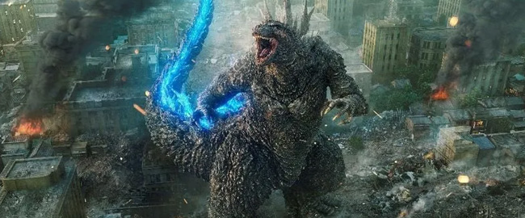
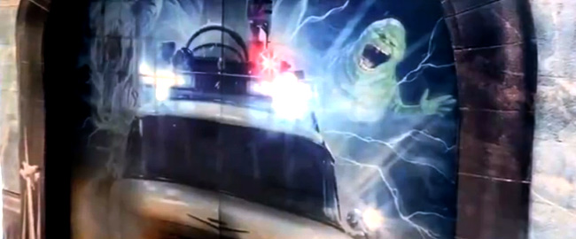
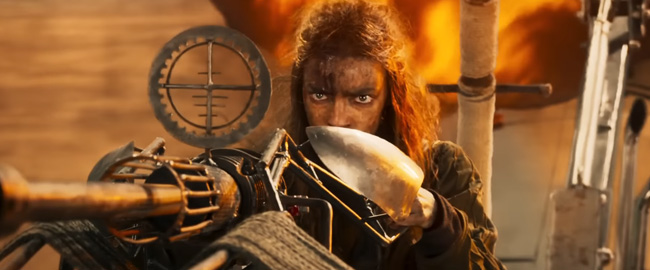

“The Last of Us” logra nominación a los Globos de Oro como mejor serie de televisión
"The Last of Us", la exitosa serie de HBO basada en el videojuego del mismo nombre, ha sido nominada para el premio de los Globos de Oro 2024 en la categoría de Mejor Serie de Televisión – Drama. La serie se enfrenta a potentes competidores como "Succession", "The Crown", "The Diplomat", "1932" y "The Morning Show".
Además, Pedro Pascal, quien interpreta al personaje principal en la serie, ha sido reconocido con una nominación en la categoría de Mejor Actuación por un Actor en una Serie de Televisión – Drama. Pascal competirá contra actores de la talla de Brian Cox, Kieran Culkin y Jeremy Strong por "Succession", así como Gary Oldman por "Slow Horses" y Dominic West por "The Crown".
"The Last of Us" espera su continuación en HBO para algún momento de 2025.
comentarios
“Godzilla Minus One” nominada a mejor película de habla No inglesa en los Critics Choice Awards
Godzilla Minus One, la última entrega de Toho, ha sido nominada a Mejor Película de Habla No Inglesa en los Critics Choice Awards. La película, que ha recaudado más de 53 millones de dólares en la taquilla mundial, es escrita y dirigida por Takashi Yamazaki.
Ambientada en el Japón de la posguerra, la película introduce una nueva amenaza para el país en forma de Godzilla. El elenco está encabezado por Ryunosuke Kamiki, Minami Hamabe, Yuki Yamada, Munetaka Aoki, Hidetaka Yoshioka, Sakura Ando y Kuranosuke Sasaki, con música de Naoki Sato.
"Godzilla Minus One" compite en la categoría junto a películas como "Anatomy of a Fall", "Perfect Days", "La Sociedad de la Nieve", "The Taste of Things" y "The Zone of Interest". La 29ª edición de los Critics Choice Awards se emitirá el domingo 14 de enero de 2024 en The CW.
comentarios
“Dune: Parte Dos” estrena un nuevo tráiler en español

La secuela de la adaptación cinematográfica de la obra de Frank Herbert, "Dune", ya tiene nuevo tráiler en español. Warner Bros. ha lanzado el avance de "Dune: Parte Dos", película dirigida una vez más por Denis Villeneuve.
La trama se centra en Paul Atreides (Timothée Chalamet), quien se une a Chani (Zendaya) y los Fremen en su búsqueda de justicia y venganza. La película explora los dilemas y desafíos a los que se enfrenta Paul, incluyendo la elección entre su amor y el destino del universo.
El elenco de la película incluye a Rebecca Ferguson, Josh Brolin, Austin Butler, Florence Pugh, Dave Bautista, Christopher Walken, Stephen McKinley Henderson, Léa Seydoux y Stellan Skarsgård.
comentarios
¡Vuelve Slimer en “Cazafantasmas: Imperio Helado”! La nueva aventura llega en marzo de 2024
Columbia Pictures ha sorprendido a los fanáticos con una emocionante revelación: Slimer regresará en la próxima entrega de la franquicia, "Cazafantasmas: Imperio Helado". La noticia fue anunciada a través de las redes sociales oficiales de la saga, donde se compartió un display lenticular en cines, prometiendo el retorno de Slimer y “un nuevo imperio de espíritus”.
A pesar de su ausencia en "Cazafantasmas: Más allá", donde el director Jason Reitman decidió explorar otros mitos y leyendas, esta nueva entrega promete ser un regreso a las raíces de la serie. En la nueva entrega, la familia Spengler vuelve a la icónica estación de bomberos de Nueva York, donde se unirán a los Cazafantasmas originales, quienes han desarrollado un laboratorio secreto para llevar la caza de fantasmas a un nivel superior.
El descubrimiento de un artefacto antiguo desatará una fuerza maligna, y los Cazafantasmas, tanto nuevos como veteranos, deberán unir fuerzas para proteger su hogar y salvar al mundo de una nueva Edad de Hielo.
La dirección de esta secuela corre a cargo de Gil Kenan ("Monster House"), mientras que Jason Reitman, director de "Cazafantasmas: Más allá", se encarga de la producción.
El elenco incluye a Patton Oswalt, Kumail Nanjiani, James Acaster, Emily Alyn Lind, junto a los clásicos Bill Murray, Finn Wolfhard, Ernie Hudson, Mckenna Grace, Paul Rudd, Celeste O’Connor, Logan Kim, Annie Potts, Dan Aykroyd y Carrie Coon.
comentarios
“Furiosa”: Póster oficial revelado del spin-off de “Mad Max”
El universo de "Mad Max" se expande con el lanzamiento del póster oficial de "Furiosa", el esperado spin-off de Mad Max: Furia en la Carretera. Protagonizada por Anya Taylor Joy, esta precuela promete llevarnos de nuevo a un mundo caótico y lleno de acción.
En Furiosa, seguimos la historia de la joven guerrera, desde su secuestro en Green Place hasta su encuentro con la banda de motociclistas de Dementus, el Señor de la Guerra. Mientras Furiosa lucha por sobrevivir en Wasteland y enfrenta a Immortan Joe en la Ciudadela, nos prepararemos para una batalla épica que definirá su destino.
Bajo la dirección de George Miller, el elenco también incluye a Chris Hemsworth ("Thor"), Angus Sampson, Nathan Jones y Tom Burke. Su estreno está programado para el 24 de mayo.